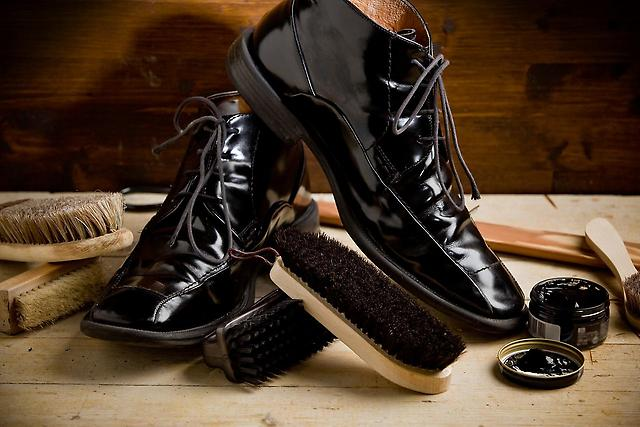

Желаете чтобы Ваша обувь имела такой же вид, как при покупке?
Не хотите переживать относительно качества и сроков ремонта?
Обувь достаточно хрупкое изделие и с ним необходимо обращаться нежно и деликатно. Правильный уход обеспечит Вам не только красоту и превосходный внешний вид обуви, но и сохранит ее на долгое время.
Доверяя свою обувь мастерской, необходимо быть уверенным в надежности и профессионализме специалистов. Ведь многие сапожники, предоставляя услуги ремонта обуви, не знают определенных деталей, тонкостей и свойств материалов тех или иных дизайнерских моделей обуви.
Очень важным фактором в этом вопросе служит и оборудование для работы с элитной обувью. Мир не стоит на месте и технологии работы с обувью меняются, поэтому в мастерской необходимо иметь новейшее технологическое оборудование.

Ремонтируя обувь у наших мастеров Вы получаете следующие преимущества:
- Индивидуальный подход к каждой паре обуви, профессиональное обслуживание и гарантированное качество выполненных работ.
- Наши мастера берутся за работу любой сложности и выполняют ее.
- Смогут выполнить СРОЧНЫЙ ремонт обуви.
- Мы предоставляем гарантию на выполненные работы.
- Только настоящие специалисты, любащие свою работу, которые сделают все возможное для поставленного задания.
- С радостью беремся даже за эксклюзивную обувь и гарантируем ее сохранность.
- Мы учитываем просьбы клиентов и постоянно развиваем технологии по химчистке и уходу за обувью.
- Сумеем дать отслужившей обуви вторую жизнь.
- Имеем большой ассортимент необходимых товаров для ремонта вашей обуви, даже если чего-то не будет, тогда сможем сделать спец-заказ, чтобы решить проблему клиента.